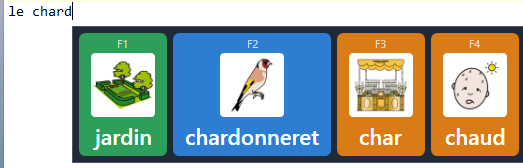
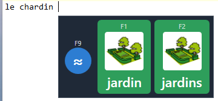

Pépite comprend mieux les sons confondus (ch / j)
Nouveau dans Pépite 0.11.0 : un élève qui écrit « ch » à la place de « j », ou l'inverse, se voit quand même proposer le mot qu'il voulait écrire. chardin
→ jardin, jien
→ chien, mancher
→ manger.
Page publiée le .
Ce qui change
Pendant que l'élève tape
Pépite propose déjà les mots qui ont le même son que ce qui est tapé, en vert : orizon
→ horizon. Désormais, il propose aussi les mots où « ch » et « j » (ou « g », « ge ») sont échangés. Ils sont eux aussi en vert et viennent, en général, après les mots qui se prononcent exactement pareil ; dans la liste ≈, toujours après.

Pictogrammes : Sergio Palao, ARASAAC, Gouvernement d'Aragon, CC BY-NC-SA 4.0
Quand le mot est fini
À gauche des mots, un petit rond indique si Pépite connaît le mot écrit. Quand l'élève finit chardin
(une espace, une virgule…), le rond devient ≈, « s'écrit peut-être autrement », au lieu de ?, « mot inconnu ». Un clic sur le rond, ou la touche F9, montre la liste des mots qui se prononcent pareil ou presque : jardin y est en premier. L'élève le choisit, et Pépite remplace chardin
par jardin
(dans les programmes où Pépite peut lire le texte ; ailleurs, il l'insère au curseur).

Pictogrammes : Sergio Palao, ARASAAC, Gouvernement d'Aragon, CC BY-NC-SA 4.0
Le rond d'orthographe est expliqué dans l'aide : ≈ bleu : s'écrit peut-être autrement.
Pourquoi
Les sons « ch » et « j » se forment de la même façon dans la bouche. La seule différence : pour « j », la voix vibre ; pour « ch », elle ne vibre pas. C'est le cas d'autres paires : f et v, k et g, t et d, p et b, s et z. Les orthophonistes et les logopèdes parlent de confusions « sourde / sonore ».
Ces confusions sont fréquentes et durables chez les enfants dyslexiques ou dysorthographiques. Elles sont aussi difficiles à corriger pour un outil habituel : chardin
ne ressemble pas assez à jardin
, ni à l'écrit, ni au son, pour qu'il le retrouve. Pépite cherche maintenant le mot en échangeant ces deux sons.
Nous avons commencé par « ch » et « j » : c'est une paire très souvent citée, et celle où l'échange se trompe le moins souvent de mot. Deux sources publiques, en français :
- J. Hourcq et N. Adron, Fais ta valise ! Création d'un jeu pour les dyslexiques phonologiques visant à la remédiation des confusions auditives de type sourde-sonore, mémoire d'orthophonie, Université Lille 2, 2011 (dépôt des mémoires de l'Université de Lille) : « Les confusions sourde-sonore sont fréquentes et persistantes chez les enfants dyslexiques-dysorthographiques présentant une altération phonologique. » Le mémoire rappelle aussi que chaque enfant confond ses propres paires.
- Ministère de l'Éducation nationale, Évaluations nationales de début de CE2, français : fiche « Écrire des mots dictés », 2026 (site eduscol.education.gouv.fr) : parmi les exemples d'erreurs d'un élève qui ne maîtrise pas encore les correspondances entre les sons et les lettres,
visache
pourvisage
.
Rien à régler
C'est en marche dès l'installation de Pépite 0.11.0, pour tous les profils. Quand l'élève tape un mot correctement, Pépite le propose à la même place qu'avant.
Bientôt : les autres paires de sons
Chaque élève a ses propres confusions : l'un mélange f et v, un autre t et d. Un réglage « Sons que l'élève confond » est prévu dans le profil de chaque élève : l'enseignant ou l'orthophoniste pourra y cocher les paires f / v, k / g, t / d et p / b. Il sera protégé par le code enseignant. Nous l'annoncerons ici quand il sera prêt.
Les limites
- Sur un début de mot très court, comme
cho…
, Pépite ne cherche pas encore l'autre son : il lui faut une ou deux lettres de plus. - Un vrai mot reste tel quel. Si l'élève écrit
bouche
alors qu'il pensait àbouge
, Pépite ne peut pas le deviner : le rond reste ✓ et rien n'est proposé à la place. Relire avec l'élève reste utile.